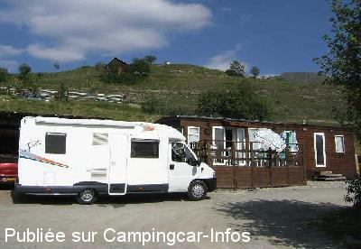

ACS = Aire de services sur camping acceptant le passage pour les services de :
FONTCOUVERTE LA TOUSSUIRE
(N° 517)
Accès/adresse :
D78
La Toussuire
Camping-Caravaneige du Col ***
73300 FONTCOUVERTE LA TOUSSUIRE
La Toussuire
Camping-Caravaneige du Col ***
73300 FONTCOUVERTE LA TOUSSUIRE
Latitude : (Nord) 45.2575° Décimaux ou 45° 15′ 27′′
Longitude : (Est) 6.2734° Décimaux ou 6° 16′ 24′′
Tarif : 2014
C-C, 2 personnes : 15 à 17,40 €
Adulte + 7 ans : 4,20 à 5,60 €
Enfant - 7 ans : 3,40 à 4,10 €
Électricité : 4,40 à 9,20 €
Animal : 1,20 €
Services C-C de passage : 6 €
Type de borne : Plateforme
Services :


Lave-linge
Sèche-linge
Piscine chauffée l'été
Navette gratuite à 80 m pour vous conduire aux pistes, 1er télésiège à 400 m
Autres informations :
Ouvert du 15/12 au 19/04
et du 15/06 au 31/08
23 emplacements
Tél : +33(0)479 830 080
GSM : +33(0)685 780 956
GSM : +33(0)659 120 343
campingducol@free.fr
http://www.camping-du-col.com

Le 26/07/2006 par rgvtt
de
DIdier
le 10/02/2014 :
J'y suis passé du 26 au 31 janvier 2014. Camping toujours impeccable, très accueillant, très bien situé.Un plus,le soleil sur le terrain toute la journée quand on a la chance d'avoir beau temps, comme ça a été le cas. A recommander ++++
J'y suis passé du 26 au 31 janvier 2014. Camping toujours impeccable, très accueillant, très bien situé.Un plus,le soleil sur le terrain toute la journée quand on a la chance d'avoir beau temps, comme ça a été le cas. A recommander ++++
de
rg vtt
le 26/07/2006 :
Super accueil, belle vue sur les Sybelles, sanitaires ok, tous services au camping ou à la station,.... A préferer au parking du "Corbier" 4 km plus bas
Super accueil, belle vue sur les Sybelles, sanitaires ok, tous services au camping ou à la station,.... A préferer au parking du "Corbier" 4 km plus bas
de
François Michallon
le 29/10/2005 :
Le nouveau propriétaire du camping est hyper sympa. Il vend du propane alors que l'on n'en trouve pas sur la station. Pas de problème pour s'approvisionner en eau et vidanger au camping.
Le nouveau propriétaire du camping est hyper sympa. Il vend du propane alors que l'on n'en trouve pas sur la station. Pas de problème pour s'approvisionner en eau et vidanger au camping.